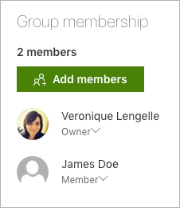
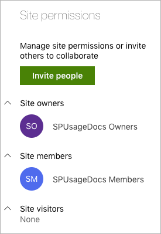
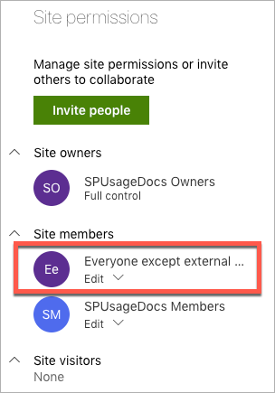
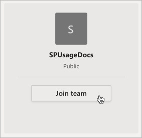

Changing Microsoft Teams from Private to Public, what to expect in SharePoint?
[!include[content-disclaimer](includes/content-disclaimer.md)]Privacy settings
As you may already know, when creating a Microsoft Teams, you can choose the privacy settings to be:
- Private
- Public
- Org-wide
Private means only the members added will be able to join the Teams, while Public means that anyone with the link to the Teams can join the fun. Org-wide is pretty self explanatory :simple_smile:
Relationship with SharePoint Online
Creating a Microsoft Teams will automatically provision/create a SharePoint site. And the privacy settings you've chosen (above) should be respected.
This means that if you've chosen your Team to be Private, added a few members, then the SharePoint site will only allow access to those members.
If you navigate to the site, click on the "number" of members on the top right corner of the page, you should see the Group membership, which is whoever you've added when creating the Team.

And Site Permissions should look like this:

Change privacy from Private to Public
Let's change the privacy settings to Public (Your Team -> ellipses -> Edit Team), and go back to SharePoint. Can you spot what changed?
At the first glance, not much to be honest 😐
The Group membership is still the same, BUT if you have a look at the Site permissions, there's something new!

The "Everyone except external users" group just got added automatically.
What does this mean?
This means that if a user (with the correct licences) knows the site URL, she/he can access the content, and will have Edit permissions.
If the user clicks on the "Conversations" tab in SharePoint, she/he is also part of the Office 365 group fun.
As for Teams, when the user opens the desktop app or browser version, clicks on Join or create a Team on the bottom left corner, the public team is showing up, and the user can join.

Changing the privacy settings should be thoughtfully decided, because Public means Public!
Note: Joining a public Team doesn't require any approval. Therefore, the user(s) will automatically become Members in Teams and in SharePoint.
Principal author: Veronique Lengelle, MVP